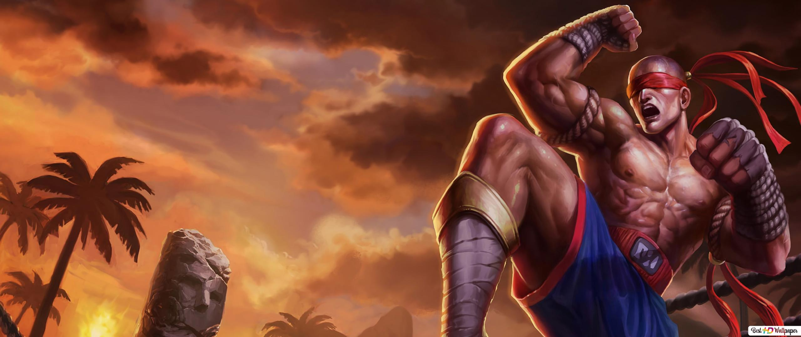

리 신은 아이오니아에 전해 내려오는 고대 무술에 통달했다. 지조 높고 고결한 전사로, 싸워야 할 때에는 용의 혼의 정수를 끌어낸다.
오래 전에 시각을 잃었으나, 고향 땅의 신성한 균형을 해치려 드는 자를 막아내는 데 일생을 바치겠다는 신념은 흔들림이 없다. 명상에 잠긴 듯 고요한 태도를 얕보고 함부로 덤벼드는 적은 리 신의 불꽃 같은 주먹과 초인적 위력의 돌려차기에 속수무책으로 당한다. 